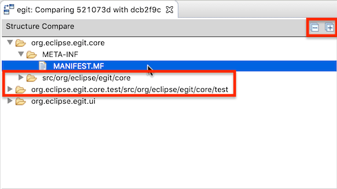
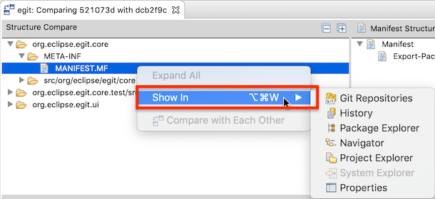
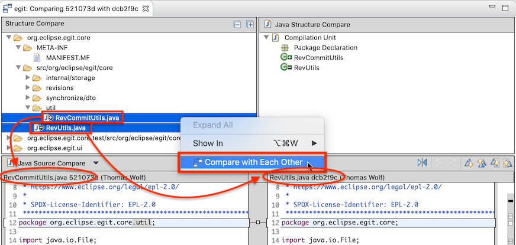
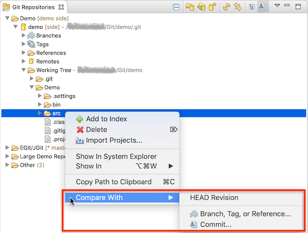
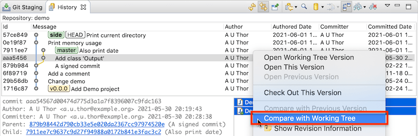

| EGit 5.13 New and Noteworthy | ||
|---|---|---|
|
|
||
| Contributors | ||
Git blame information shown in an editor open on a file from the git working tree of a git repository is updated now whenever the HEAD of that repository changes, for instance, when a new branch is checked out, or when the currently shown file is edited, saved, and then committed. The git blame information can be switched on via the Show Revision Information command available in the context menu of the editor.
EGit 5.13 brings some improvements in the compare editor of Eclipse, and some new commands to compare commits against the working tree.
When a comparison is opened on several files, the Compare Editor of Eclipse shows a directory view at the top. EGit 5.13 customizes this view to show a compact tree in which a single folder node is shown for a whole folder hierarchy when there is nothing interesting to show for intermediary folders:

This directory viewer in the Eclipse Compare Editor is typically fairly small (the user can enlarge it, though), and a compact tree is in many cases easier to navigate.
In addition, the view gets a toolbar with operations to expand or collapse all directories shown in the view. The context menu has an Expand All command that fully expands only the selected folders.
EGit 5.13 also customizes the view's context menu.

Newly, the Show In sub-menu is also available in this context menu in the Commit Editor. It can be used to show the selected items in other views.
Additionally, there is a new Compare with Each Other command that is active when exactly two files are selected in the directory viewer. It opens a comparison between the two selected files.

This is especially useful when files have been renamed, but the Compare Editor shows them as one file having been added and the other having been deleted. To get a comparison of the renamed file, select the added and the deleted file and choose Compare with Each Other.
In the Git Repositories View, there's a new command to compare a branch, tag, or other reference directly with the working tree.

Conversely, when files or directories are selected in the Git Repositories View, there's a new sub-menu Compare With to compare the working tree against an arbitrary branch, tag, or commit.

Finally, Compare With Working Tree is now also enabled in the Git History View when several files are selected. Previously this command was enabled only when a single file was selected.

EGit 5.13 adds new API in the org.eclipse.egit.core bundle to give access to its credentials store. EGit by default uses the Eclipse Secure Storage to store log-in credentials such as user names and passwords (or in the case of Github, personal access tokens (PATs)) or passphrases for encrypted SSH keys. Newly, this credentials store is accessible and even customizeable via the
OSGi service mechanism. The implementation has been split into a storage back-end service and a UI service, and EGit provides default service implementations for both with the default service ranking. Third-party code can install its own implementations by providing services with a higher ranking.
There are two new OSGi service interfaces in bundle org.eclipse.egit.core:
org.eclipse.egit.core.credentials.CredentialsStore is the service interface for the storage back-end. EGit Core provides a default service implementation based on the Eclipse Secure Storage.org.eclipse.egit.core.credentials.CredentialsUI is the UI service interface. EGit UI (bundle org.eclipse.egit.ui) provides a default service implementation, prompting the user for passwords or passphrases via dialogs.EGit 5.13 includes some less noticeable improvements in the UI, plus a number of bug fixes. The complete list of new features and bug fixes is available in the release notes.
|
|
||
| Contributors |